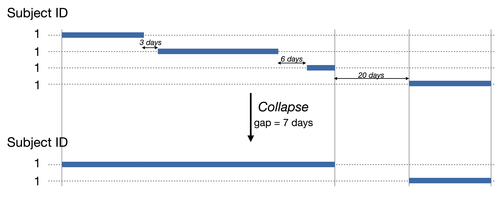
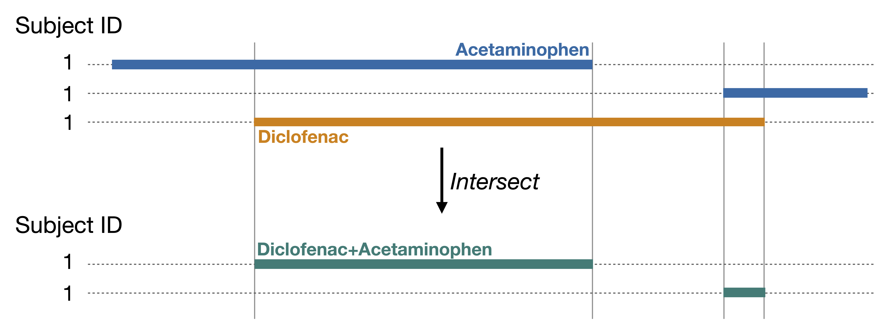

# Load relevant packages
library(CDMConnector)
library(CodelistGenerator)
library(CohortConstructor)
library(CohortCharacteristics)
library(duckdb)
library(DBI)
library(dplyr)
library(gt)
library(here)CohortConstructor
Build and Curate Study Cohorts in R Using the OMOP Common Data Model
2025-06-24
Introduction
- CohortConstructor package is designed to support cohort building pipelines in R, using data mapped to the OMOP Common Data Model.
- The code is publicly available in OHDSI’s GitHub repository CohortConstructor.
- CohortConstructor v0.4.0 is available in CRAN.
- Vignettes with further information can be found in the package website.
CohortConstructor pipeline
1) Create base cohorts
Cohorts defined using clinical concepts (e.g., asthma diagnoses) or demographics (e.g., females aged >18)
2) Cohort-curation
Tranform base cohorts to meet study-specific inclusion criteria.
Function Sets
Base cohorts Cohort construction based on clinical concepts or demographics.
Requirements and Filtering Demographic restrictions, event presence/absence conditions, and filtering specific records.
Update cohort entry and exit Adjusting entry and exit dates to align with study periods, observation windows, or key events.
Transformation and Combination Merging, stratifying, collapsing, matching, or intersecting cohorts.
Base cohorts
Functions to build base cohorts
Create the cdm_reference object
datasetName <- "GiBleed"
dbdir <- here(paste0(datasetName, ".duckdb"))
con <- dbConnect(drv = duckdb(dbdir = dbdir))
cdm <- cdmFromCon(
con = con,
cdmSchema = "main",
writeSchema = "main",
writePrefix = "my_study_",
cdmName = datasetName
)Demographics based - Example
- Two cohorts, females and males, both aged 18 to 60 years old, with at least 365 days of previous observation in the database.
cdm$age_cohort <- demographicsCohort(
cdm = cdm,
ageRange = c(18, 60),
sex = c("Female", "Male"),
minPriorObservation = 365,
name = "age_cohort"
)
settings(x = cdm$age_cohort)# A tibble: 2 × 5
cohort_definition_id cohort_name age_range sex min_prior_observation
<int> <chr> <chr> <chr> <dbl>
1 1 demographics_1 18_60 Female 365
2 2 demographics_2 18_60 Male 365Demographics based - Example
cohortCount(cohort = cdm$age_cohort)# A tibble: 2 × 3
cohort_definition_id number_records number_subjects
<int> <int> <int>
1 1 1373 1373
2 2 1321 1321attrition(x = cdm$age_cohort)# A tibble: 8 × 7
cohort_definition_id number_records number_subjects reason_id reason excluded_records excluded_subjects
<int> <int> <int> <int> <chr> <int> <int>
1 1 2694 2694 1 Initial qualifying e… 0 0
2 1 1373 1373 2 Sex requirement: Fem… 1321 1321
3 1 1373 1373 3 Age requirement: 18 … 0 0
4 1 1373 1373 4 Prior observation re… 0 0
5 2 2694 2694 1 Initial qualifying e… 0 0
6 2 1321 1321 2 Sex requirement: Male 1373 1373
7 2 1321 1321 3 Age requirement: 18 … 0 0
8 2 1321 1321 4 Prior observation re… 0 0Demographics based - Example
To better visualise the attrition, we can use the package CohortCharacteristics to create a formatted table:
cdm$age_cohort |>
summariseCohortAttrition() |>
tableCohortAttrition()| Reason |
Variable name
|
|||
|---|---|---|---|---|
| number_records | number_subjects | excluded_records | excluded_subjects | |
| GiBleed; demographics_1 | ||||
| Initial qualifying events | 2,694 | 2,694 | 0 | 0 |
| Sex requirement: Female | 1,373 | 1,373 | 1,321 | 1,321 |
| Age requirement: 18 to 60 | 1,373 | 1,373 | 0 | 0 |
| Prior observation requirement: 365 days | 1,373 | 1,373 | 0 | 0 |
| GiBleed; demographics_2 | ||||
| Initial qualifying events | 2,694 | 2,694 | 0 | 0 |
| Sex requirement: Male | 1,321 | 1,321 | 1,373 | 1,373 |
| Age requirement: 18 to 60 | 1,321 | 1,321 | 0 | 0 |
| Prior observation requirement: 365 days | 1,321 | 1,321 | 0 | 0 |
Concept based - Example
Let’s create a cohort of medications that contains two drugs: diclofenac, and acetaminophen.
- Get relevant codelists with
CodelistGenerator
drug_codes <- getDrugIngredientCodes(
cdm = cdm,
name = c("diclofenac", "acetaminophen"),
nameStyle = "{concept_name}"
)
drug_codes
- acetaminophen (7 codes)
- diclofenac (1 codes)Concept based - Example
- Create concept based cohorts
cdm$medications <- conceptCohort(
cdm = cdm,
conceptSet = drug_codes,
name = "medications"
)
settings(x = cdm$medications)# A tibble: 2 × 4
cohort_definition_id cohort_name cdm_version vocabulary_version
<int> <chr> <chr> <chr>
1 1 acetaminophen 5.3 v5.0 18-JAN-19
2 2 diclofenac 5.3 v5.0 18-JAN-19 Concept based - Example
- Attrition
| Reason |
Variable name
|
|||
|---|---|---|---|---|
| number_records | number_subjects | excluded_records | excluded_subjects | |
| acetaminophen | ||||
| Initial qualifying events | 14,205 | 2,679 | 0 | 0 |
| Record start <= record end | 14,205 | 2,679 | 0 | 0 |
| Record in observation | 14,205 | 2,679 | 0 | 0 |
| Non-missing sex | 14,205 | 2,679 | 0 | 0 |
| Non-missing year of birth | 14,205 | 2,679 | 0 | 0 |
| Merge overlapping records | 13,908 | 2,679 | 297 | 0 |
| diclofenac | ||||
| Initial qualifying events | 850 | 850 | 0 | 0 |
| Record start <= record end | 850 | 850 | 0 | 0 |
| Record in observation | 830 | 830 | 20 | 20 |
| Non-missing sex | 830 | 830 | 0 | 0 |
| Non-missing year of birth | 830 | 830 | 0 | 0 |
| Merge overlapping records | 830 | 830 | 0 | 0 |
Concept based - Example
- Cohort codelist as an attribute
attr(cdm$medications, "cohort_codelist")# Source: table<my_study_medications_codelist> [?? x 4]
# Database: DuckDB v1.3.1 [unknown@Linux 6.11.0-1015-azure:R 4.5.1//home/runner/work/RealWorldEvidenceSummerSchool2025/RealWorldEvidenceSummerSchool2025/GiBleed.duckdb]
cohort_definition_id codelist_name concept_id codelist_type
<int> <chr> <int> <chr>
1 1 acetaminophen 1125315 index event
2 1 acetaminophen 1127078 index event
3 1 acetaminophen 1127433 index event
4 1 acetaminophen 40229134 index event
5 1 acetaminophen 40231925 index event
6 1 acetaminophen 40162522 index event
7 1 acetaminophen 19133768 index event
8 2 diclofenac 1124300 index event Your turn!
Get Started: Create the cdm_reference object
# Load relevant packages
library(CDMConnector)
library(CodelistGenerator)
library(CohortConstructor)
library(CohortCharacteristics)
library(duckdb)
library(DBI)
library(dplyr)
library(gt)
library(here)datasetName <- "GiBleed"
dbdir <- here(paste0(datasetName, ".duckdb"))
con <- dbConnect(drv = duckdb(dbdir = dbdir))
cdm <- cdmFromCon(
con = con,
cdmSchema = "main",
writeSchema = "main",
writePrefix = "my_study_",
cdmName = datasetName
)Exercise 1 - Base cohorts
Create a cohort of aspirin use.
- How many records does it have? And how many subjects?
| CDM name | Variable name | Estimate name |
Cohort name
|
|---|---|---|---|
| aspirin | |||
| GiBleed | Number records | N | 4,379 |
| Number subjects | N | 1,927 |
💡 Click to see solution
aspirin <- getDrugIngredientCodes(
cdm = cdm, name = "aspirin", nameStyle = "{concept_name}"
)
cdm$aspirin <- conceptCohort(cdm = cdm, conceptSet = aspirin, name = "aspirin")
counts <- summariseCohortCount(cohort = cdm$aspirin)
tableCohortCount(reuslt = counts)Requirements and Filtering
Functions to apply requirements and filter
-
On demographics
-
On cohort entries
-
Require presence or absence based on other cohorts, concepts, and tables
-
Other
requireMincohortCount(cohort = )
Requirement functions - Example
-
We can apply different inclusion criteria using CohortConstructor’s functions in a pipe-line fashion. For instance, in what follows we require
only first record per person
subjects 18 years old or more at cohort start date
only females
at least 30 days of prior observation at cohort start date
cdm$medications_requirement <- cdm$medications |>
requireIsFirstEntry(name = "medications_requirement") |>
requireDemographics(
ageRange = list(c(18, 150)),
sex = "Female",
minPriorObservation = 30
)Requirement functions - Example
Attrition Acetaminophen
| Reason |
Variable name
|
|||
|---|---|---|---|---|
| number_records | number_subjects | excluded_records | excluded_subjects | |
| acetaminophen | ||||
| Initial qualifying events | 14,205 | 2,679 | 0 | 0 |
| Record start <= record end | 14,205 | 2,679 | 0 | 0 |
| Record in observation | 14,205 | 2,679 | 0 | 0 |
| Non-missing sex | 14,205 | 2,679 | 0 | 0 |
| Non-missing year of birth | 14,205 | 2,679 | 0 | 0 |
| Merge overlapping records | 13,908 | 2,679 | 297 | 0 |
| Restricted to first entry | 2,679 | 2,679 | 11,229 | 0 |
| Age requirement: 18 to 150 | 309 | 309 | 2,370 | 2,370 |
| Sex requirement: Female | 176 | 176 | 133 | 133 |
| Prior observation requirement: 30 days | 176 | 176 | 0 | 0 |
| Future observation requirement: 0 days | 176 | 176 | 0 | 0 |
Requirement functions - Example
- Now, we only want to keep those exposures coinciding with at least one healthcare visit on that same day:
cdm$medications_requirement <- cdm$medications_requirement |>
requireTableIntersect(
tableName = "visit_occurrence",
window = c(0, 0),
intersections = c(1, Inf)
)Requirement functions - Example
Attrition Acetaminophen
| Reason |
Variable name
|
|||
|---|---|---|---|---|
| number_records | number_subjects | excluded_records | excluded_subjects | |
| acetaminophen | ||||
| Initial qualifying events | 14,205 | 2,679 | 0 | 0 |
| Record start <= record end | 14,205 | 2,679 | 0 | 0 |
| Record in observation | 14,205 | 2,679 | 0 | 0 |
| Non-missing sex | 14,205 | 2,679 | 0 | 0 |
| Non-missing year of birth | 14,205 | 2,679 | 0 | 0 |
| Merge overlapping records | 13,908 | 2,679 | 297 | 0 |
| Restricted to first entry | 2,679 | 2,679 | 11,229 | 0 |
| Age requirement: 18 to 150 | 309 | 309 | 2,370 | 2,370 |
| Sex requirement: Female | 176 | 176 | 133 | 133 |
| Prior observation requirement: 30 days | 176 | 176 | 0 | 0 |
| Future observation requirement: 0 days | 176 | 176 | 0 | 0 |
| In table visit_occurrence between 0 & 0 days relative to cohort_start_date between 1 and Inf | 1 | 1 | 175 | 175 |
Your turn!
Exercise 2 - Requirement and filtering
Create a new cohort named “aspirin_last” by applying the following criteria to the base aspirin cohort:
Include only the last drug exposure for each subject.
Include exposures that start between January 1, 1960, and December 31, 1979.
Exclude individuals with an amoxicillin exposure in the 7 days prior to the aspirin exposure.
💡 Click to see solution
amoxicillin <- getDrugIngredientCodes(
cdm = cdm, name = "amoxicillin", nameStyle = "{concept_name}"
)
cdm$aspirin_last <- cdm$aspirin |>
requireIsLastEntry(name = "aspirin_last") |>
requireInDateRange(dateRange = as.Date(c("1960-01-01", "1979-12-31"))) |>
requireConceptIntersect(
conceptSet = amoxicillin,
window = list(c(-7, 0)),
intersections = 0
)
result <- summariseCohortAttrition(cdm$aspirin_last)
tableCohortAttrition(result = result)Move to the next slide to see the attrition.
Exercise 2 - Requirement and filtering
| Reason |
Variable name
|
|||
|---|---|---|---|---|
| number_records | number_subjects | excluded_records | excluded_subjects | |
| GiBleed; aspirin | ||||
| Initial qualifying events | 4,380 | 1,927 | 0 | 0 |
| Record start <= record end | 4,380 | 1,927 | 0 | 0 |
| Record in observation | 4,380 | 1,927 | 0 | 0 |
| Non-missing sex | 4,380 | 1,927 | 0 | 0 |
| Non-missing year of birth | 4,380 | 1,927 | 0 | 0 |
| Merge overlapping records | 4,379 | 1,927 | 1 | 0 |
| Restricted to last entry | 1,927 | 1,927 | 2,452 | 0 |
| cohort_start_date after 1960-01-01 | 1,511 | 1,511 | 416 | 416 |
| cohort_start_date before 1979-12-31 | 1,174 | 1,174 | 337 | 337 |
| Not in concept amoxicillin between -7 & 0 days relative to cohort_start_date | 1,163 | 1,163 | 11 | 11 |
Update cohort entry and exit
Functions to update cohort start and end dates
-
Cohort entry
-
Trim start and end dates
-
Pad start and end dates
Update cohort entry and exit - Example
We can trim start and end dates to match demographic requirements.
-
For instance, cohort dates can be trimmed so the subject contributes time while:
Aged 20 to 40 years old
Prior observation of at least 365 days
cdm$medications_trimmed <- cdm$medications |>
trimDemographics(
ageRange = list(c(20, 40)),
minPriorObservation = 365,
name = "medications_trimmed"
)Update cohort entry and exit - Example
| Reason |
Variable name
|
|||
|---|---|---|---|---|
| number_records | number_subjects | excluded_records | excluded_subjects | |
| acetaminophen | ||||
| Initial qualifying events | 14,205 | 2,679 | 0 | 0 |
| Record start <= record end | 14,205 | 2,679 | 0 | 0 |
| Record in observation | 14,205 | 2,679 | 0 | 0 |
| Non-missing sex | 14,205 | 2,679 | 0 | 0 |
| Non-missing year of birth | 14,205 | 2,679 | 0 | 0 |
| Merge overlapping records | 13,908 | 2,679 | 297 | 0 |
| Age requirement: 20 to 40 | 4,049 | 2,124 | 9,859 | 555 |
| Prior observation requirement: 365 days | 4,049 | 2,124 | 0 | 0 |
Your turn!
Exercise 3 - Update cohort entry and exit
Create a cohort of ibuprofen. From it, create an “ibuprofen_death” cohort which includes only subjects that have a future record of death in the database, and update cohort end date to be the death date.
💡 Click to see solution
ibuprofen <- getDrugIngredientCodes(
cdm = cdm, name = "ibuprofen", nameStyle = "{concept_name}"
)
cdm$ibuprofen <- conceptCohort(
cdm = cdm, conceptSet = ibuprofen, name = "ibuprofen"
)
cdm$ibuprofen_death <- cdm$ibuprofen |>
exitAtDeath(requireDeath = TRUE, name = "ibuprofen_death")
result <- summariseCohortAttrition(cdm$ibuprofen_death)
tableCohortAttrition(result = result)Move to the next slide to see the attrition.
Exercise 3 - Update cohort entry and exit
| Reason |
Variable name
|
|||
|---|---|---|---|---|
| number_records | number_subjects | excluded_records | excluded_subjects | |
| GiBleed; ibuprofen | ||||
| Initial qualifying events | 2,148 | 1,451 | 0 | 0 |
| Record start <= record end | 2,148 | 1,451 | 0 | 0 |
| Record in observation | 2,148 | 1,451 | 0 | 0 |
| Non-missing sex | 2,148 | 1,451 | 0 | 0 |
| Non-missing year of birth | 2,148 | 1,451 | 0 | 0 |
| Merge overlapping records | 2,148 | 1,451 | 0 | 0 |
| No death recorded | 0 | 0 | 2,148 | 1,451 |
| Exit at death | 0 | 0 | 0 | 0 |
Transformation and Combination
Functions for Cohort Transformation and Combination
-
Split cohorts
-
Combine cohorts
-
Filter cohorts
-
Match cohorts
-
Concatenate entries
-
Copy and rename cohorts
Cohort combinations - Example
- Collapse drug exposures that are within a gap of 7 days.

Cohort combinations - Example
cdm$medications_collapsed <- cdm$medications |>
collapseCohorts(gap = 7, name = "medications_collapsed")| Reason |
Variable name
|
|||
|---|---|---|---|---|
| number_records | number_subjects | excluded_records | excluded_subjects | |
| acetaminophen | ||||
| Initial qualifying events | 14,205 | 2,679 | 0 | 0 |
| Record start <= record end | 14,205 | 2,679 | 0 | 0 |
| Record in observation | 14,205 | 2,679 | 0 | 0 |
| Non-missing sex | 14,205 | 2,679 | 0 | 0 |
| Non-missing year of birth | 14,205 | 2,679 | 0 | 0 |
| Merge overlapping records | 13,908 | 2,679 | 297 | 0 |
| Collapse cohort with a gap of 7 days. | 13,899 | 2,679 | 9 | 0 |
Cohort combinations - Example
- Create a new cohort that contains people who had an exposure to both diclofenac and acetaminophen at the same time using.

Cohort combinations - Example
cdm$intersection <- cdm$medications_collapsed |>
intersectCohorts(name = "intersection")
settings(x = cdm$intersection)# A tibble: 1 × 5
cohort_definition_id cohort_name gap acetaminophen diclofenac
<int> <chr> <dbl> <dbl> <dbl>
1 1 acetaminophen_diclofenac 0 1 1Your turn!
Exercise 4 - Transformation and Combination
From the ibuprofen base cohort (not subseted to death), create five separate cohorts. Each cohort should include records for one specific year from the following list: 1975, 1976, 1977, 1978, 1979, and 1980.
- How many records and subjects are in each cohort?
💡 Click to see solution
cdm$ibuprofen_years <- cdm$ibuprofen |>
yearCohorts(years = 1975:1980, name = "ibuprofen_years")
counts <- summariseCohortCount(cohort = cdm$ibuprofen_years)
tableCohortCount(result = counts)| CDM name | Variable name | Estimate name |
Cohort name
|
|||||
|---|---|---|---|---|---|---|---|---|
| ibuprofen_1975 | ibuprofen_1976 | ibuprofen_1977 | ibuprofen_1978 | ibuprofen_1979 | ibuprofen_1980 | |||
| GiBleed | Number records | N | 71 | 64 | 60 | 75 | 66 | 63 |
| Number subjects | N | 68 | 61 | 60 | 74 | 66 | 63 | |
[Optional] Exercise 5
Use CohortConstructor to create a cohort with the following criteria:
Users of diclofenac
Females aged 16 or older
With at least 365 days of continuous observation prior to exposure
Without prior exposure to amoxicillin
With cohort exit defined as first discontinuation of exposure. An exposure being define as recorded exposures within 7-days gap
Move to the next slide to see the attrition.
[Optional] Exercise 5
Move to the next slide to see the solution.
| Reason |
Variable name
|
|||
|---|---|---|---|---|
| number_records | number_subjects | excluded_records | excluded_subjects | |
| GiBleed; diclofenac | ||||
| Initial qualifying events | 850 | 850 | 0 | 0 |
| Record start <= record end | 850 | 850 | 0 | 0 |
| Record in observation | 830 | 830 | 20 | 20 |
| Non-missing sex | 830 | 830 | 0 | 0 |
| Non-missing year of birth | 830 | 830 | 0 | 0 |
| Merge overlapping records | 830 | 830 | 0 | 0 |
| Age requirement: 16 to 150 | 830 | 830 | 0 | 0 |
| Sex requirement: Female | 435 | 435 | 395 | 395 |
| Prior observation requirement: 365 days | 435 | 435 | 0 | 0 |
| Future observation requirement: 0 days | 435 | 435 | 0 | 0 |
| Not in concept amoxicillin between -Inf & -1 days relative to cohort_start_date | 161 | 161 | 274 | 274 |
| Collapse cohort with a gap of 7 days. | 161 | 161 | 0 | 0 |
| Restricted to first entry | 161 | 161 | 0 | 0 |
[Optional] Exercise 5
💡 Click to see solution
amoxicillin <- getDrugIngredientCodes(
cdm = cdm,
name = c("amoxicillin"),
nameStyle = "{concept_name}"
)
diclofenac <- getDrugIngredientCodes(
cdm = cdm,
name = "diclofenac",
nameStyle = "{concept_name}"
)
cdm$diclofenac <- conceptCohort(
cdm = cdm,
conceptSet = diclofenac,
name = "diclofenac"
) |>
requireDemographics(
sex = "Female",
ageRange = list(c(16, 150)),
minPriorObservation = 365
) |>
requireConceptIntersect(
conceptSet = amoxicillin,
window = list(c(-Inf, -1)),
intersections = 0
) |>
collapseCohorts(gap = 7) |>
requireIsFirstEntry()
result <- summariseCohortAttrition(cdm$diclofenac)
tableCohortAttrition(result = result)CohortConstructor
Real World Evidence Summer School 2025